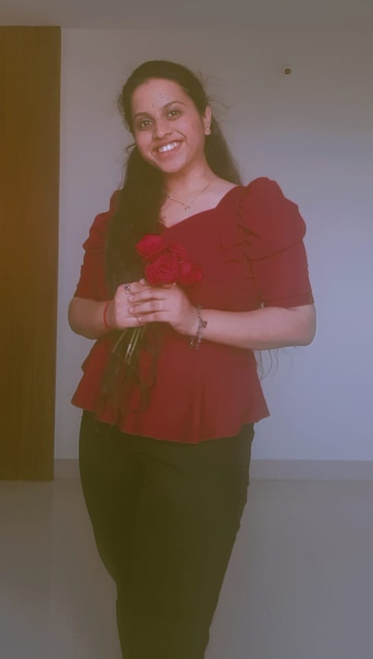

About Me
Hello!! I'm PENUGONDA KRUSHITHA, Specialized in Artificial intelligence & Machine Learning with a passion for building intelligent systems that solve real-world problems. My journey into AI and ML wasn’t just a career choice — it was a calling driven by curiosity and a desire to push the boundaries of what’s possible with technology.
I’m passionate about developing scalable and ethical AI solutions that not only enhance user experiences but also contribute to positive societal change. Whether it's building recommendation engines, natural language processing models, or computer vision systems, I enjoy taking on complex challenges and continuously learning to refine my skills.